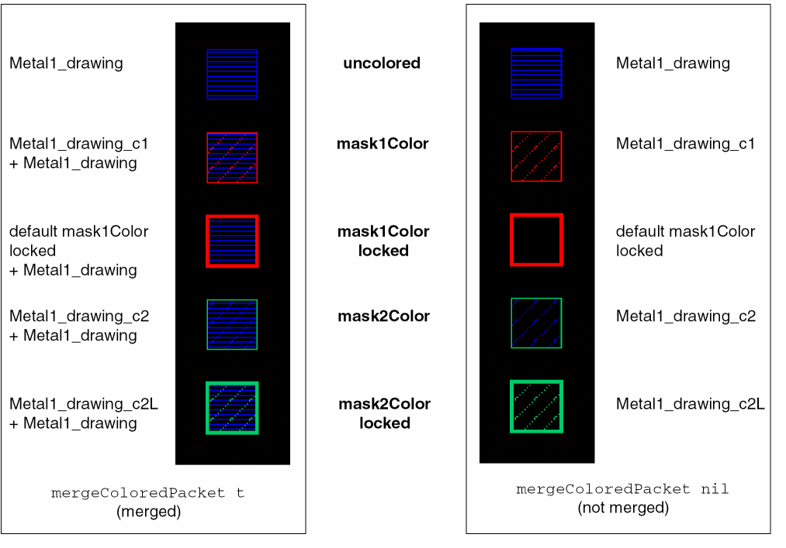

Example
techDisplays(
;( LayerName Purpose Packet …)
( Metal1 drawing M1_drawing …)
( Metal1 blockage M1_blockage …)
( Via1 drawing V1_drawing …)
…
) ;techDisplays
drDefinePacket(
;(DispName PacketName Stipple LineStyle Fill Outline [FillStyle])
(display M1_drawing hLine solid blue blue outlineStipple)
(display M1_drawing_c1 stipple0 solid red red outlineStipple)
(display M1_drawing_c2 stipple0 solid blue green outlineStipple)
(display M1_drawing_c2L stipple0 thickLine green green outlineStipple)
(display M1_blockage hLine solid blue blue outlineStipple)
(display M1_blockage_c1 hLine solid blue red outlineStipple)
(display M1_blockage_c2 hLine solid blue iceblue outlineStipple)
(display M1_blockage_black hLine solid blue lilac outlineStipple)
(display M1_blockage_multi hLine solid blue purple outlineStipple)
(display V1_drawing solid thickLine orange orange X)
(display V1_drawing_cl solid thickLine orange red outlineStipple)
(display V1_drawing_c2 solid thickLine orange green outlineStipple)
…
)
There is no display packet specified for M1_drawing_c1L. Therefore, the default mask1Color locked display packet is used which has a thick red outline with no stipple.
The graphical representations for shapes using this display.drf for the two mergeColoredPacket environment variable settings are shown below.

Related Topics
Enabling the Multiple Patterning Color Engine
Modifying the Default Multi-Patterning Environment Variable Settings
Customizing Displayed Coloring
Return to top